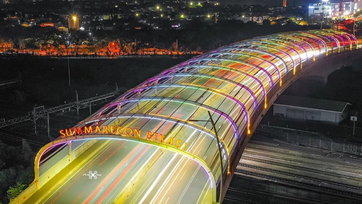
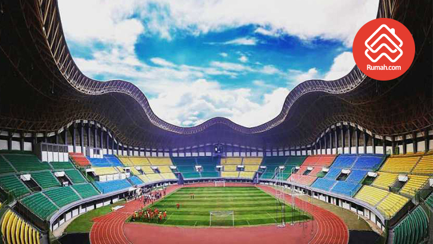
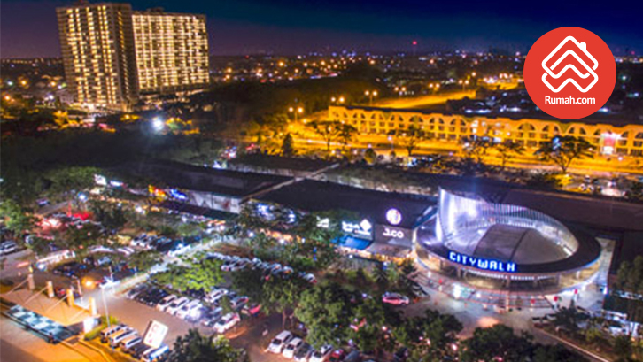

Flyover KH Noer Ali Summarrecon Bekasi ini punya peranan penting bagi perkembangan kawasan ini. Asal tahu saja, tanpa flyover ini untuk mencapai Kota Summarecon Bekasi maka harus lewat Jalan Perjuangan yang penuh perjuangan karena sangat macet.
Flyover yang jadi ikon Bekasi ini melintas di atas jalur kereta api dengan bentang jembatan sepanjang 130 meter. Dan yang menarik, flyover ini dibangun tanpa tiang penyangga dan merupakan salah satu jembatan dengan bentang terpanjang di Indonesia.
Maklum, jembatan yang dirancang gagah dan terlihat indah ini menelan biaya hingga Rp200 miliar. Flyover sepanjang 1 kilometer dengan lebar 22 meter dan memiliki empat jalur jalan ini mengadopsi teknologi konstruksi yang sangat canggih, “Balanced Cantilever”.

Dengan catatan: jangan dibandingkan dengan Gelora Bung Karno, Senayan. Stadion Patriot Chandrabhaga kota Bekasi ini mampu menampung sebanyak 30 ribu orang penonton. Terbilang sangat megah jika dibandingkan sejumlah wilayah penopang Jakarta lainnya.
Kapasitas tampung penontonnya paling besar daripada stadion yang dimiliki kota Bogor, Depok, Serpong atau Tangerang. Untuk bujet renovasinya saja stadion yang terletak di Jl. KH. Noer Ali, Kota Bekasi ini menelan biaya hingga Rp234 miliar.

Tak tanggung-tanggung, ada terdapat 8 kawasan industri di kawasan ini, baik di wilayah Kota Bekasi maupun Kabupaten Bekasi (Cikarang). Dan semua kawasan industri ini dibangun dengan konsep industrial estate, kota mandiri dengan fasilitas pendukung yang lengkap.
Ya, di kawasan industri ini ada banyak kawasan hunian yang dikembangkan oleh banyak pengembang besar seperti Jababeka, Lippo Cikarang, Sinar Mas Land, dan lain-lain. Bukan cuma itu, apartemen, hotel, pusat belanja, hingga pendidikan juga ada di dalam kawasan industrial ini.

Satu lagi. Alam Sutera juga boleh bangga punya IKEA tapi Bekasi juga punya Courts Megastore pertama di Indonesia. Courts hadir di kawasan Kota Harapan Indah, Bekasi. Dengan begitu artinya pihak Courts juga meyakini prospek positif perkembangan masa depan Bekasi nanti.